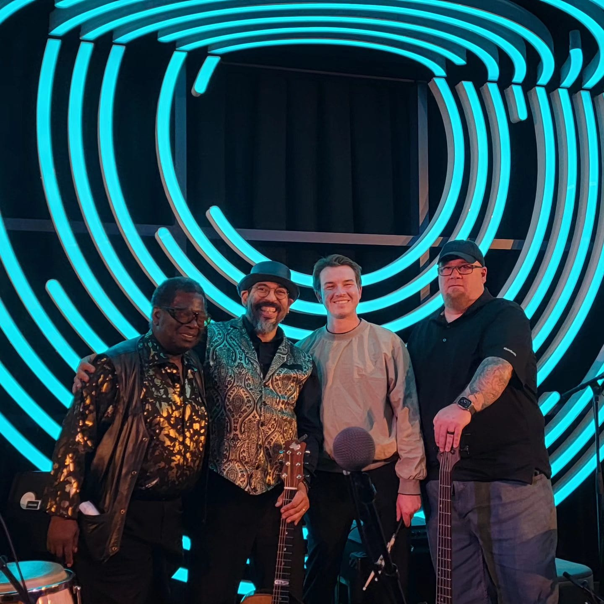

Dinner parties, cocktail parties & milestones
Live music for your Denver private party.
You know how a party at home feels different the minute someone picks up a guitar? In our experience, most Denver private parties only need a solo guitarist or an acoustic duo who can play right where your guests already are.
Birthdays and anniversaries are private parties we love to play, too, at home or at a venue.
Photos
Live music for a patio or a dance floor
Here’s Tony Medina on a patio, playing quietly enough for everyone to keep talking, and here he is with his band when it’s time to get people dancing.


Solo & duo
How big a band do you need for a house party?
A solo musician is a great choice for cocktails and dinner if your guests will be staying at the table. A duo can play the whole evening, and they can bring the energy up later on if you’d like. You can also book either one for just an hour.
Wondering what each size costs for a house party in Colorado? Our cost guide can help.
Where they happen
Denver homes, clubs & landmark venues
Most of the private parties we see in Denver happen at home, often in historic neighborhoods like Country Club, Hilltop and Park Hill and around Washington Park. A duo fits easily on most main floors, and we’ll find a corner where your guests can see them and there’s power nearby.
Club dinners are popular in Denver, too. Private dining at the University Club of Denver or the Denver Athletic Club takes care of the venue, so the music may be the last thing left to decide. A jazz duo is perfect for a club dinner, with upright bass and guitar playing the standards.
For a milestone, you may want a bigger band and a bigger venue. Mile High Station has plenty of space for a quartet and a real dance floor. Grant-Humphreys Mansion is a lovely, century-old house for an anniversary, and Denver Botanic Gardens is a beautiful spot for a summer event outdoors that wraps up early. If you’d like dancing at your milestone party, we’d suggest Tejas Singh. He can play as a duo through dinner and bring a quartet for the dancing, all on one contract.
“[He] came to play in our home for a party and did an amazing job! He is a talented musician and was extremely easy and responsive to work with. He was able to play exactly the type of music we were looking for. Thanks for taking our party up a notch!”
Want some more ideas? We can help with anything from an engagement party to a holiday party at home.
After dark
Noise limits for a Denver house party
If you’re planning a party at home, amplified music outdoors may not be able to go very late anywhere in Denver. The noise rules in Denver vary by zone, and they change. What we can tell you is that it’s best to plan the louder music early in the evening or indoors.
If your street, venue or HOA has a noise limit, let us know when you book and we’ll plan the event around it, the same way we do with the published sound limits at the mountain venues.
Planning a party in Boulder? The limits there tend to be earlier and stricter.
Questions
Hiring live music for a Denver house party
Need stage sizes, power and setup times for a bigger band? Check out our technical page.
Can a band fit in a Denver house?
How loud is it at dinner?
What about parking and unloading?
Do you play private parties all over Denver?
Tell us about the party, at home or at the club, and we'll recommend the act.
We’d love to help with your party, whether you need one musician or a full band.